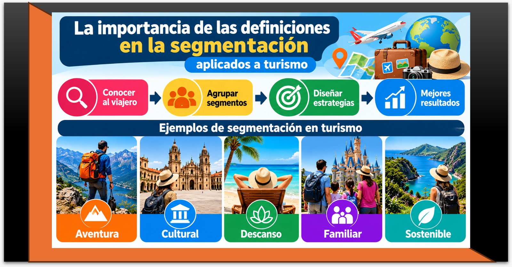

Unidad I · Tema 1.2
Encuadre basado en las notas metodológicas de la Organización Mundial del Turismo (OMT)
Las notas metodológicas de la Organización Mundial del Turismo constituyen el estándar global que permite medir, clasificar y comparar con rigor técnico los flujos de visitantes, orientando decisiones estratégicas y de inversión en marketing.
1.2.1¿Qué es la OMT y por qué nos importa?
La Organización Mundial del Turismo (OMT) es el organismo especializado de las Naciones Unidas encargado de la promoción de un turismo responsable, sostenible y accesible para todos. Sus notas metodológicas son documentos técnicos que establecen definiciones, clasificaciones y procedimientos para medir el turismo de manera comparable entre países.
Para el marketing turístico, estas notas son fundamentales porque nos dan un lenguaje común. Si queremos analizar mercados, comparar destinos, medir el impacto de nuestras campañas o justificar inversiones, necesitamos hablar en los mismos términos que los demás actores del sector a nivel nacional e internacional.
OMT en español; UNWTO en inglés (United Nations World Tourism Organization), las que aparecen en la imagen. Desde 2024 se presenta también como ONU Turismo. Sus recomendaciones estadísticas y su Cuenta Satélite de Turismo permiten que los datos de llegadas, gasto y pernoctaciones sean comparables entre países.
1.2.2Definiciones clave de la OMT aplicadas al marketing
La precisión conceptual es indispensable para evitar confusiones al proyectar la demanda turística:
- Turismo: actividades que realizan las personas durante sus viajes y estancias en lugares distintos a su entorno habitual, por un período inferior a un año, con fines de ocio, negocios u otros motivos.
- Visitante: toda persona que viaja a un lugar distinto a su entorno habitual, por menos de un año, con cualquier motivo principal que no sea el de ser empleado por una entidad residente en el lugar visitado.
- Turista: visitante que pernocta al menos una noche en el lugar visitado.
- Excursionista: visitante que no pernocta en el destino (visita de día).
- Destino turístico: espacio físico donde un visitante pernocta al menos una noche. Incluye productos turísticos, servicios, atractivos, recursos, infraestructura y actores comunitarios e institucionales.
- Gasto turístico: todo gasto de consumo efectuado por un visitante o por cuenta de un visitante durante su viaje y estancia en el lugar visitado.
- Producto turístico: combinación de elementos tangibles e intangibles, como recursos naturales, culturales, humanos, actividades, servicios e infraestructura, que conforman la experiencia integral del visitante.
1.2.3La importancia de las definiciones en la segmentación
Cuando segmentamos el mercado, necesitamos saber si hablamos de turistas o de excursionistas, porque su comportamiento de consumo, impacto económico y requerimientos son radicalmente distintos.
| Aspecto | Turista (pernocta) | Excursionista (no pernocta) |
|---|---|---|
| Gasto promedio | Alto | Bajo |
| Duración de estancia | 1 o más noches | Horas |
| Uso de alojamiento | Sí (hoteles, hostales, renta vacacional) | No |
| Uso de restaurantes | Varias comidas (desayuno, comida, cena) | Una o dos comidas |
| Actividades | Diversas, nocturnas, recorridos amplios | Limitadas, diurnas, circuitos rápidos |
| Estrategia de Marketing | Paquetes completos, experiencias, reservas anticipadas | Promoción de paso, consumo rápido, cupones flash |

La infografía muestra la segmentación como una secuencia de cuatro pasos y ejemplifica cinco segmentos frecuentes en turismo.
Las definiciones de la OMT son el primer filtro: dentro de cada segmento, un turista y un excursionista gastan y consumen de forma muy distinta, como muestra la tabla de este subtema.
1.2.4La medición del turismo según la OMT
La OMT propone medir el desempeño de la actividad turística a través de cinco indicadores clave:
- Llegadas de visitantes: número total de visitantes que arriban al destino en un periodo determinado.
- Pernoctaciones: número total de noches que los turistas pasan en los establecimientos de alojamiento del destino.
- Gasto turístico: monto total monetario ejercido por los visitantes durante su desplazamiento y estadía.
- Ingresos por turismo: volumen de ingresos generados directamente por la actividad turística en la economía local.
- Empleo turístico: número de plazas de trabajo directas e indirectas generadas y sostenidas por el sector.
Estos indicadores son el sustento cuantitativo para evaluar la efectividad y retorno de nuestras campañas de marketing.
1.2.5Ejercicio resuelto 2: Análisis de un destino con datos OMT
Preguntas de análisis:
- ¿Cuál es el gasto total anual generado por los turistas?
- ¿Cuál es el gasto total anual generado por los excursionistas?
- ¿Qué segmento resulta sustancialmente más rentable para el destino?
- ¿Qué estrategias diferenciadas de marketing se deben proponer para cada segmento?
Solución paso a paso:
1. Gasto total de turistas:
- 30,000 turistas × 4 noches = 120,000 pernoctaciones
- 120,000 pernoctaciones × 1,200 pesos = 144,000,000 pesos
2. Gasto total de excursionistas:
- 20,000 excursionistas × 400 pesos = 8,000,000 pesos
3. Evaluación de rentabilidad:
El segmento de turistas es abrumadoramente más rentable para la economía del destino. Genera $144 millones de pesos frente a los $8 millones producidos por los excursionistas (una proporción de 18 a 1). No obstante, los excursionistas representan un volumen relevante de flujo que puede optimizarse como mercado complementario.
4. Estrategias de marketing recomendadas:
- Para turistas: estructuración de paquetes de 4 noches con experiencias nocturnas, actividades náuticas, rutas gastronómicas y alianzas interhoteleras. Campañas de marketing digital dirigidas a mercados emisores lejanos fomentando la reserva anticipada (early booking).
- Para excursionistas: puntos de contacto promocional en terminales de llegada, carreteras y accesos clave; ofertas de medio día en restaurantes y comercios artesanales; marketing de proximidad y códigos QR con promociones de consumo inmediato.